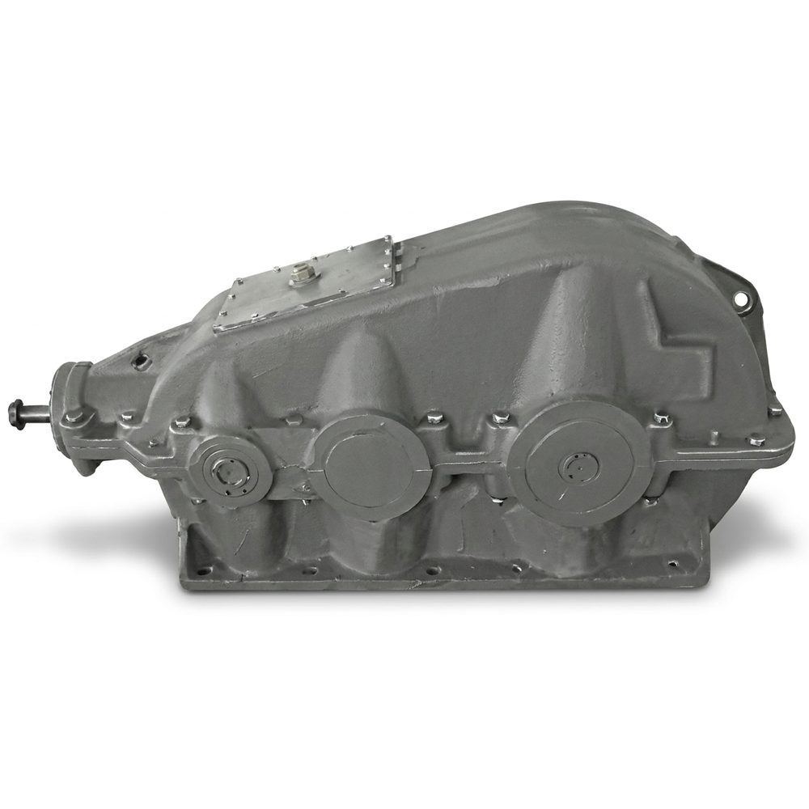
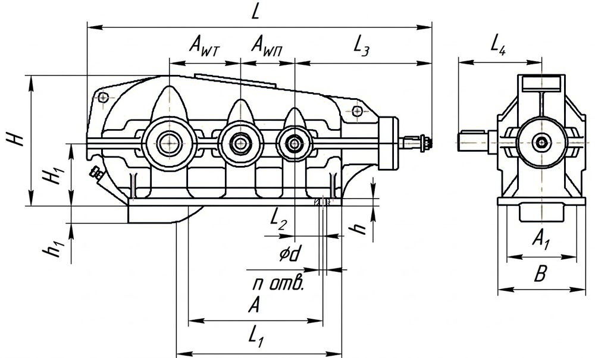
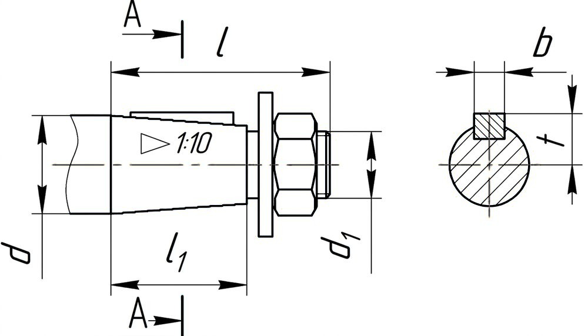
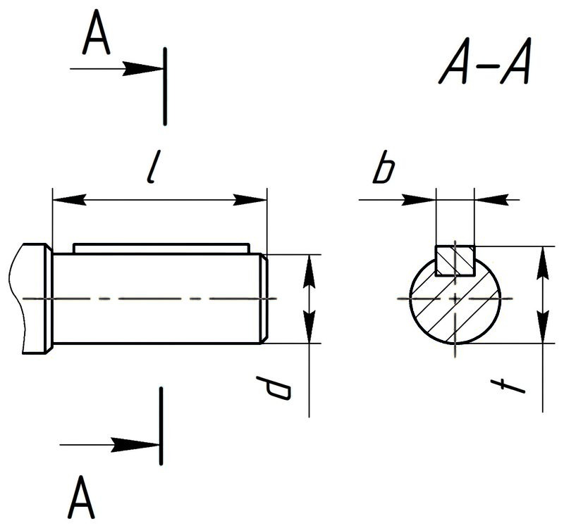
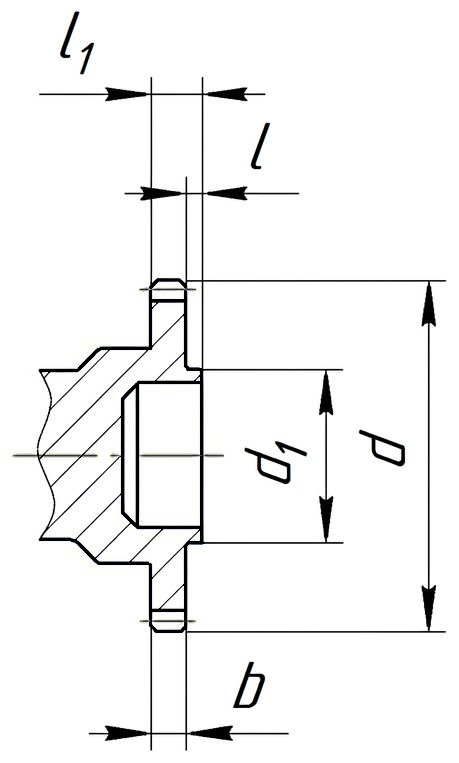

Позвонить: (4842) 75-75-05
Написать сообщение: m-40@inbox.ru
- Главная
- О компании
- Контакты
- Редукторы и мотор-редукторы
- Колеса крановые
- Блоки полиспаста
- Шкивы тормозные
- Муфты
- Крюки и крюковые подвески
- Грузовые барабаны
- Шлицевые детали
- Конические шестерни
- Цилиндрические шестерни
- Запасные части для козловых кранов
- Запасные части для портальных кранов
- Запасные части для башенных кранов
- Техническая информация
- Правовая информация
Редукторы конические двухступенчатые → Редуктор КЦ2 1000
- Главная
- О компании
- Контакты
- Редукторы и мотор-редукторы
- Колеса крановые
- Блоки полиспаста
- Шкивы тормозные
- Муфты
- Крюки и крюковые подвески
- Грузовые барабаны
- Конические шестерни
- Цилиндрические шестерни
- Шлицевые детали
- Запасные части для козловых кранов
- Запасные части для портальных кранов
- Запасные части для башенных кранов
- Техническая информация
- Правовая информация

Редукторы коническо-цилиндрические двухступенчатые горизонтальные общемашиностроительного применения типа КЦ2 1000,
предназначены для увеличения крутящего момента и уменьшения частоты вращения.
Условное обозначение: Редуктор КЦ2-1000-45-41У2
Коническо-цилиндрический двухступенчатый редуктор с межосевым расстоянием 100 мм, номинальным передаточным числом 45, вариантом сборки 41, климатического
исполнения У и категории размещения 2.
Технические характеристики редуктора КЦ2 1000
Передаточные числа
28; 45; 71; 112; 180
Номинальный крутящий момент на тихоходном валу, Н·м
14500...15500
КПД
0,91
Масса, кг
2658
Примечания:
- При работе в реверсивном режиме, т.е. при периодическом изменении направлений нагрузки
номинальные крутящие моменты на выходном валу, указанные в таблице, должны быть снижены на 30%;
- Редукторы допускают кратковременные перегрузки, возникающие при пусках и остановках
двигателя, в 2 раза превышающие номинальные нагрузки, если число циклов нагружения быстроходного вала за время действия этих перегрузок
не превысит 3·106 в течение всего срока службы редуктора;
- Номинальная радиальная нагрузка на выходном валу для варианта сборки 43 должна быть уменьшена в два раза.
Условия применения редукторов:
- Нагрузка постоянная и переменная, одного направления и реверсивная;
- Работа постоянная или с периодическими остановками;
- Вращение валов в любую сторону;
- Частота вращения входного вала не должна превышать 1800 об/мин;
- Атмосфера типов I и II по ГОСТ 15150-69 при запыленности воздуха не более 10 мг/м3;
- Климатические исполнения У, Т (для категории размещения 1…3) и климатические исполнения УХЛ и О
(для категорий размещения 4) по ГОСТ 15150-69.
Коническо-цилиндрический двухступенчатый редуктор с межосевым расстоянием 100 мм, номинальным передаточным числом 45, вариантом сборки 41, климатического
исполнения У и категории размещения 2.
Технические характеристики редуктора КЦ2 1000
| Передаточные числа | 28; 45; 71; 112; 180 | |
| Номинальный крутящий момент на тихоходном валу, Н·м | 14500...15500 | |
| КПД | 0,91 | |
| Масса, кг | 2658 | |
Примечания:
- При работе в реверсивном режиме, т.е. при периодическом изменении направлений нагрузки
номинальные крутящие моменты на выходном валу, указанные в таблице, должны быть снижены на 30%;
- Редукторы допускают кратковременные перегрузки, возникающие при пусках и остановках
двигателя, в 2 раза превышающие номинальные нагрузки, если число циклов нагружения быстроходного вала за время действия этих перегрузок
не превысит 3·106 в течение всего срока службы редуктора;
- Номинальная радиальная нагрузка на выходном валу для варианта сборки 43 должна быть уменьшена в два раза.
Условия применения редукторов:
- Нагрузка постоянная и переменная, одного направления и реверсивная;
- Работа постоянная или с периодическими остановками;
- Вращение валов в любую сторону;
- Частота вращения входного вала не должна превышать 1800 об/мин;
- Атмосфера типов I и II по ГОСТ 15150-69 при запыленности воздуха не более 10 мг/м3;
- Климатические исполнения У, Т (для категории размещения 1…3) и климатические исполнения УХЛ и О
(для категорий размещения 4) по ГОСТ 15150-69.
- При работе в реверсивном режиме, т.е. при периодическом изменении направлений нагрузки номинальные крутящие моменты на выходном валу, указанные в таблице, должны быть снижены на 30%;
- Редукторы допускают кратковременные перегрузки, возникающие при пусках и остановках двигателя, в 2 раза превышающие номинальные нагрузки, если число циклов нагружения быстроходного вала за время действия этих перегрузок не превысит 3·106 в течение всего срока службы редуктора;
- Номинальная радиальная нагрузка на выходном валу для варианта сборки 43 должна быть уменьшена в два раза.
Условия применения редукторов:
- Нагрузка постоянная и переменная, одного направления и реверсивная;
- Работа постоянная или с периодическими остановками;
- Вращение валов в любую сторону;
- Частота вращения входного вала не должна превышать 1800 об/мин;
- Атмосфера типов I и II по ГОСТ 15150-69 при запыленности воздуха не более 10 мг/м3;
- Климатические исполнения У, Т (для категории размещения 1…3) и климатические исполнения УХЛ и О
(для категорий размещения 4) по ГОСТ 15150-69.
- Нагрузка постоянная и переменная, одного направления и реверсивная;
- Работа постоянная или с периодическими остановками;
- Вращение валов в любую сторону;
- Частота вращения входного вала не должна превышать 1800 об/мин;
- Атмосфера типов I и II по ГОСТ 15150-69 при запыленности воздуха не более 10 мг/м3;
- Климатические исполнения У, Т (для категории размещения 1…3) и климатические исполнения УХЛ и О (для категорий размещения 4) по ГОСТ 15150-69.

Габаритные и присоединительные размеры редуктора КЦ2 1000
| AWT | AWП | A | A1 | B | H | H1 | h | h1 | L | L1 | L2 | L3 | L4 | d | n |
| 600 | 400 | 1530 | 600 | 690 | 956 | 400 | 40 | 200 | 2482 | 1700 | 165 | 848 | 615 | 33 | 10 |

Размеры быстроходного конического вала редуктора КЦ2 1000
| d | d1 | l | l1 | b | t |
| 60 | М42×3,0 | 140 | 105 | 16 | 31,4 |

Размеры тихоходного цилиндрического вала редуктора КЦ2 1000
| d | l | b | t |
| 130 | 250 | 32 | 137 |

Размеры тихоходного вала редуктора КЦ2 1000 в виде части зубчатой муфты
| b | d | d1 | l | l1 | Зацепление | |
| m | z | |||||
| 35 | 288 | 180 | 20 | 75 | 6 | 46 |
Варианты сборки редуктора КЦ2 1000
Узнать цену редуктора КЦ2 1000 Вы можете здесь, или по телефону:
(4842) 75-75-05
Условное обозначение исполнений редукторов типа КЦ2 1000
Передаточное отношение 28,0
КЦ2-1000-28-41
КЦ2-1000-28-42
КЦ2-1000-28-43
Передаточное отношение 45,0
КЦ2-1000-45-41
КЦ2-1000-45-42
КЦ2-1000-45-43
Передаточное отношение 71,0
КЦ2-1000-71-41
КЦ2-1000-71-42
КЦ2-1000-71-43
Передаточное отношение 112,0
КЦ2-1000-112-41
КЦ2-1000-112-42
КЦ2-1000-112-43
Передаточное отношение 180,0
КЦ2-1000-180-41
КЦ2-1000-180-42
КЦ2-1000-180-43
Перечень запасных частей редукторов типа КЦ2 1000
Наименование детали
Число зубьев
Обозначение
Значение
Быстроходный вал-шестерня
z1
16
Колесо быстроходное коническое
z2
55
Вал-шестерня промежуточная
z3
11
15
20
26
35
Колесо промежуточное
z4
88
83
77
73
64
Вал-шестерня тихоходная
z5
13
14
18
Колесо тихоходное
z6
86
85
81
Редуктор КЦ2 1000 неоднократно модернизировался различными заводами СССР. В связи с чем, характеристики зубчатых передач
редукторов КЦ2 1000 могут отличаться между собой по модулю и количеству зубьев при одинаковых передаточных числах.
При размещении заказа в ЗАО "НПО "Механик" без предоставления чертежей деталей, ответственность за несоответствие деталей несет Покупатель.
Узнать цену на запасные части к редуктору КЦ2 1000 Вы можете здесь, или по телефону:
(4842) 75-75-05
Условное обозначение исполнений редукторов типа КЦ2 1000
| Передаточное отношение 28,0 | ||
| КЦ2-1000-28-41 | КЦ2-1000-28-42 | КЦ2-1000-28-43 |
| Передаточное отношение 45,0 | ||
| КЦ2-1000-45-41 | КЦ2-1000-45-42 | КЦ2-1000-45-43 |
| Передаточное отношение 71,0 | ||
| КЦ2-1000-71-41 | КЦ2-1000-71-42 | КЦ2-1000-71-43 |
| Передаточное отношение 112,0 | ||
| КЦ2-1000-112-41 | КЦ2-1000-112-42 | КЦ2-1000-112-43 |
| Передаточное отношение 180,0 | ||
| КЦ2-1000-180-41 | КЦ2-1000-180-42 | КЦ2-1000-180-43 |
Перечень запасных частей редукторов типа КЦ2 1000
| Наименование детали | Число зубьев | |
| Обозначение | Значение | |
| Быстроходный вал-шестерня | z1 | 16 |
| Колесо быстроходное коническое | z2 | 55 |
| Вал-шестерня промежуточная | z3 | 11 |
| 15 | ||
| 20 | ||
| 26 | ||
| 35 | ||
| Колесо промежуточное | z4 | 88 |
| 83 | ||
| 77 | ||
| 73 | ||
| 64 | ||
| Вал-шестерня тихоходная | z5 | 13 |
| 14 | ||
| 18 | ||
| Колесо тихоходное | z6 | 86 |
| 85 | ||
| 81 | ||
При размещении заказа в ЗАО "НПО "Механик" без предоставления чертежей деталей, ответственность за несоответствие деталей несет Покупатель.
(4842) 75-75-05
КМЗ
Калужский механический завод
г. Калуга, ул. Дорожная, д. 40
Пн–Пт 8:00–17:00
Пн–Пт 8:00–17:00
© 2026 ООО «Калужский механический завод»
ИНН 4028052180 · КПП 402801001